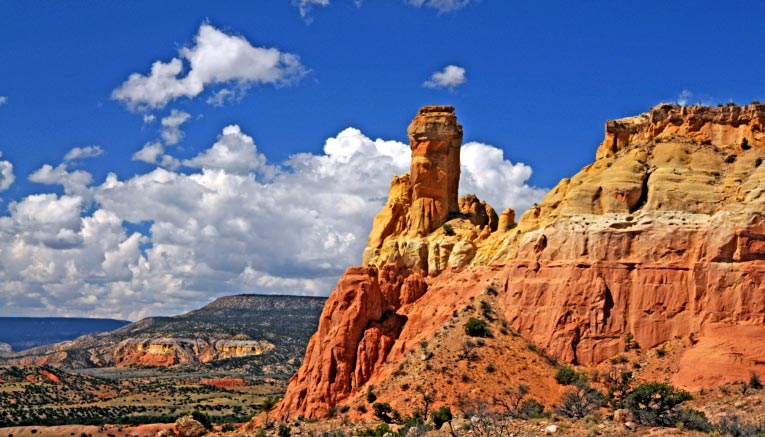

| Home | Arizona | California | Nevada | Utah | Colorado | New Mexico |
| New Mexico (NM) facts: | ||
| State capital | Santa Fe |  |
| Joined the union | January 6, 1912 as the 47th state | |
| Land area | 121,589 square miles | |
| State nickname | Land of Enchantment | |
| State motto | Crescit eundo (It grows as it goes) | |
| State flower | Yucca flower | |
| Tourism office | www.newmexico.gov |